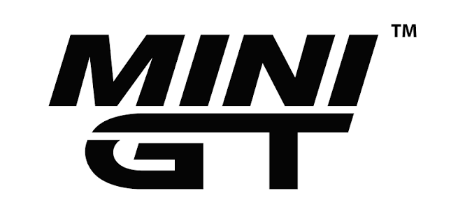
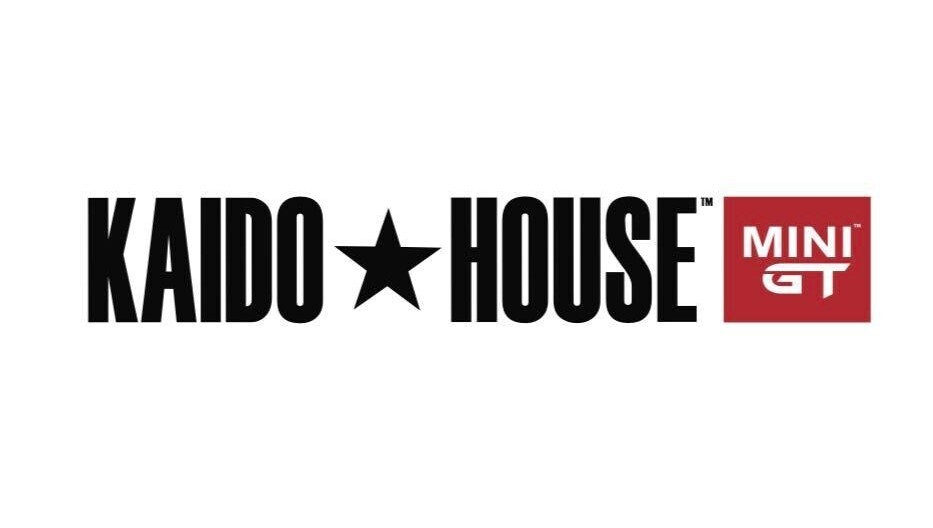
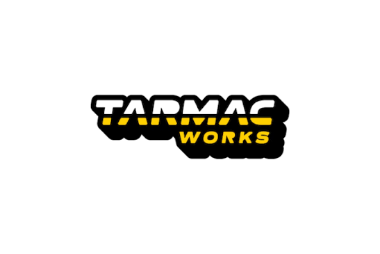
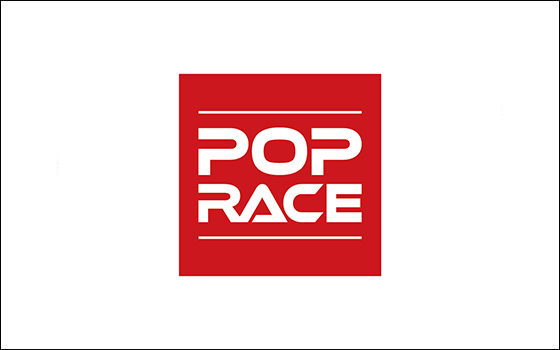
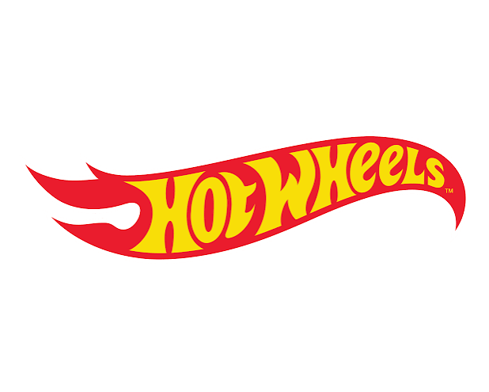
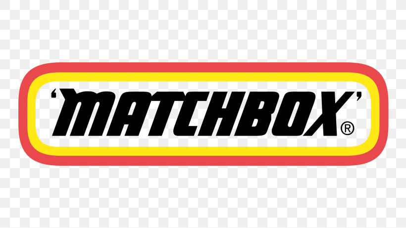

Collection Vault
Add cars with photos, brand, model, year, packaging, rarity, notes, and condition. Keep loose cars and carded cars organized without visual noise.
Tailored collection management for diecast collectors who want every model, release, value, and memory in one place.
Collector SolutionsDiecastDrawer is built for collectors who track more than a shelf count. Catalog 1:64 models, monitor upcoming releases, estimate value, and share the cars that matter without turning the hobby into a spreadsheet.
Follow the launchEach workflow is quiet, direct, and made for repeated use: add the car, track the release, understand the value, then decide what belongs in the drawer.
Add cars with photos, brand, model, year, packaging, rarity, notes, and condition. Keep loose cars and carded cars organized without visual noise.
Browse current and upcoming drops from brands collectors follow, then move targets into your wishlist before they disappear.
Use active listing signals to estimate collection value, compare models, and understand when a car is moving outside its normal range.
Publish your shelf, follow other collectors, comment on standout finds, and build a public view that still feels curated.
Track premium releases, mainline finds, chase variants, and the models you are still trying to land. The structure stays simple even as the collection grows.

MiniGTPremium releases
Kaido HouseChase targets Inno64Detailed models
Tarmac WorksMotorsport models
Pop RaceCollector favorites
Hot WheelsMainline and premium
MatchboxModern and classicDiecastDrawer is available on the App Store. Built for collectors who want a calm, searchable record of the cars they own and the cars they are still chasing.
View on App Store